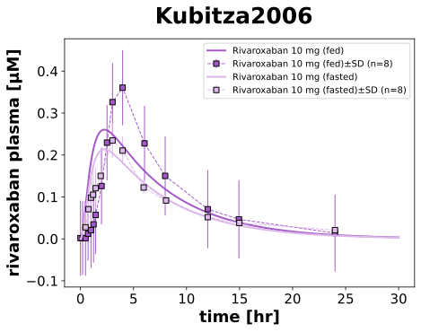
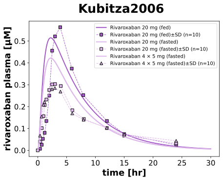
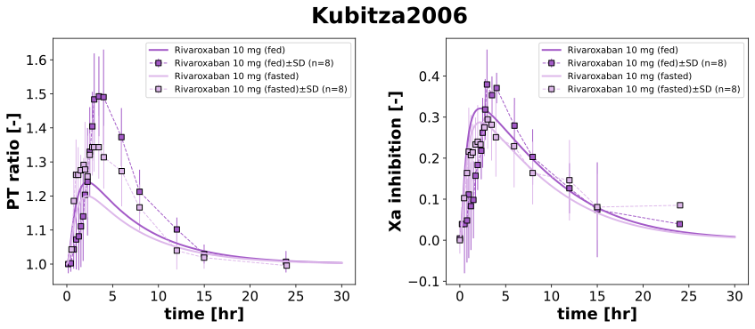

|  |
|  |
|  |
../../../../experiments/studies/kubitza2006.py
from typing import Dict
from sbmlsim.data import DataSet, load_pkdb_dataframe
from sbmlsim.fit import FitMapping, FitData
from sbmlsim.plot import Axis, Figure
from sbmlsim.simulation import Timecourse, TimecourseSim
from pkdb_models.models import rivaroxaban
from pkdb_models.models.rivaroxaban.experiments.base_experiment import (
RivaroxabanSimulationExperiment,
)
from pkdb_models.models.rivaroxaban.experiments.metadata import (
Tissue, Route, Dosing, ApplicationForm, Health, Fasting, RivaroxabanMappingMetaData
)
from pkdb_models.models.rivaroxaban.helpers import run_experiments
class Kubitza2006(RivaroxabanSimulationExperiment):
"""Simulation experiment for Kubitza2006 — food effect and dosing."""
fasting_states = ["fasted", "fed"]
fraction_absorbed = {
"fasted": RivaroxabanSimulationExperiment.fasting_map["fasted"],
"fed": RivaroxabanSimulationExperiment.fasting_map["fed"],
}
groups = [
"RIV10_fed",
"RIV10_fasted",
"RIV20_fed",
"RIV20_fasted",
"RIV4x5_fasted",
]
group_labels = {
"RIV10_fed": "Rivaroxaban 10 mg (fed)",
"RIV10_fasted": "Rivaroxaban 10 mg (fasted)",
"RIV20_fed": "Rivaroxaban 20 mg (fed)",
"RIV20_fasted": "Rivaroxaban 20 mg (fasted)",
"RIV4x5_fasted": "Rivaroxaban 4 × 5 mg (fasted)",
}
bodyweights = {
"RIV10_fed": 85,
"RIV10_fasted": 85,
"RIV20_fed": 86,
"RIV20_fasted": 86,
"RIV4x5_fasted": 86,
}
doses = {
"RIV10_fed": 10,
"RIV10_fasted": 10,
"RIV20_fed": 20,
"RIV20_fasted": 20,
"RIV4x5_fasted": 20,
}
colors = {
"RIV10_fed": "#A35AC7", # "#DF9EE8",
"RIV10_fasted": "#DDB8EA", # "#F7E6FB",
"RIV20_fed": "#A35AC7", # "#DF9EE8",
"RIV20_fasted": "#DDB8EA", # "#F7E6FB",
"RIV4x5_fasted": "#DDB8EA", # "#EAC6F3",
}
info_fig2_5 = {
"[Cve_riv]": "rivaroxaban"
}
info_fig3_4 = {
"PT_ratio": "prothrombin time (change relative)",
"Xa_inhibition": "factor Xa inhibition"
}
def datasets(self) -> Dict[str, DataSet]:
dsets = {}
fig_ids = ["Fig2", "Fig3", "Fig4", "Fig5"]
for fig_id in fig_ids:
df = load_pkdb_dataframe(f"{self.sid}_{fig_id}", data_path=self.data_path)
for label, df_label in df.groupby("label"):
dset = DataSet.from_df(df_label, self.ureg)
if "rivaroxaban" in label:
dset.unit_conversion("mean", 1 / self.Mr.riv)
dsets[label] = dset
# print(label)
return dsets
def simulations(self) -> Dict[str, TimecourseSim]:
Q_ = self.Q_
tcsims = {}
for group in self.groups:
dose = self.doses[group]
bw = self.bodyweights[group]
fed = "fed" in group
fasting_key = "fed" if fed else "fasted"
fraction_absorbed = self.fasting_map[fasting_key]
tcsims[group] = TimecourseSim([
Timecourse(
start=0,
end=30 * 60, # 30 hours in minutes
steps=500,
changes={
**self.default_changes(),
"BW": Q_(bw, "kg"),
"PODOSE_riv": Q_(dose, "mg"),
"GU__F_riv_abs": Q_(fraction_absorbed, "dimensionless"),
},
)
])
return tcsims
def fit_mappings(self) -> Dict[str, FitMapping]:
mappings = {}
# PK mapping for all groups
for group in self.groups:
fed = "fed" in group
for sid, name in self.info_fig2_5.items():
mappings[f"fm_{name}_{group}"] = FitMapping(
self,
reference=FitData(
self,
dataset=f"{name}_{group}",
xid="time",
yid="mean",
yid_sd="mean_sd",
count="count",
),
observable=FitData(
self,
task=f"task_{group}",
xid="time",
yid=sid,
),
metadata=RivaroxabanMappingMetaData(
tissue=Tissue.PLASMA,
route=Route.PO,
application_form=ApplicationForm.TABLET,
dosing=Dosing.SINGLE,
health=Health.HEALTHY,
fasting=Fasting.FED if fed else Fasting.FASTED,
),
)
# PD mappings only for the correct groups
pd_groups = ["RIV10_fed", "RIV10_fasted"]
for group in pd_groups:
fed = "fed" in group
for sid, name in self.info_fig3_4.items():
mappings[f"fm_{name}_{group}"] = FitMapping(
self,
reference=FitData(
self,
dataset=f"{name}_{group}",
xid="time",
yid="mean",
yid_sd="mean_sd",
count="count",
),
observable=FitData(
self,
task=f"task_{group}",
xid="time",
yid=sid,
),
metadata=RivaroxabanMappingMetaData(
tissue=Tissue.PLASMA,
route=Route.PO,
application_form=ApplicationForm.TABLET,
dosing=Dosing.SINGLE,
health=Health.HEALTHY,
fasting=Fasting.FED if fed else Fasting.FASTED,
),
)
return mappings
def figures(self) -> Dict[str, Figure]:
return {
**self.figure_concentration(),
"Fig_PD": self.figure_pd(),
}
def figure_concentration(self) -> Dict[str, Figure]:
fig1 = Figure(
experiment=self,
sid="Fig_conc_10mg",
name=self.__class__.__name__
)
fig5 = Figure(
experiment=self,
sid="Fig_conc_20mg",
name=self.__class__.__name__
)
plot_fig1 = fig1.create_plots(
xaxis=Axis(self.label_time, unit=self.unit_time),
legend=True,
)
plot_fig1[0].set_yaxis(self.label_riv_plasma, unit=self.unit_riv)
plot_fig5 = fig5.create_plots(
xaxis=Axis(self.label_time, unit=self.unit_time),
legend=True,
)
plot_fig5[0].set_yaxis(self.label_riv_plasma, unit=self.unit_riv)
for group in ["RIV10_fed", "RIV10_fasted"]:
label = group.replace("_", " ")
plot_fig1[0].add_data(
task=f"task_{group}",
xid="time",
yid="[Cve_riv]",
label = self.group_labels[group],
color=self.colors[group],
)
plot_fig1[0].add_data(
dataset=f"rivaroxaban_{group}",
xid="time",
yid="mean",
yid_sd="mean_sd",
count="count",
label = self.group_labels[group],
color=self.colors[group],
)
for group in ["RIV20_fed", "RIV20_fasted", "RIV4x5_fasted"]:
label = group.replace("_", " ")
plot_fig5[0].add_data(
task=f"task_{group}",
xid="time",
yid="[Cve_riv]",
label = self.group_labels[group],
color=self.colors[group],
)
plot_fig5[0].add_data(
dataset=f"rivaroxaban_{group}",
xid="time",
yid="mean",
yid_sd="mean_sd",
count="count",
label = self.group_labels[group],
color=self.colors[group],
marker="^" if "4x5" in label else "s"
)
return {
"Fig_conc_10mg": fig1,
"Fig_conc_20mg": fig5,
}
def figure_pd(self) -> Figure:
fig = Figure(
experiment=self,
sid="Fig_PD",
num_cols=2, # <-- Change from num_rows=2 to num_cols=2
name=self.__class__.__name__
)
plots = fig.create_plots(
xaxis=Axis(self.label_time, unit=self.unit_time),
legend=True,
)
plots[0].set_yaxis(self.labels["PT_ratio"], unit=self.units["PT_ratio"])
plots[1].set_yaxis(self.labels["Xa_inhibition"], unit=self.units["Xa_inhibition"])
for group in ["RIV10_fed", "RIV10_fasted"]:
label = group.replace("_", " ")
plots[0].add_data(
task=f"task_{group}",
xid="time",
yid="PT_ratio",
label = self.group_labels[group],
color=self.colors[group],
)
plots[0].add_data(
dataset=f"prothrombin time (change relative)_{group}",
xid="time",
yid="mean",
yid_sd="mean_sd",
count="count",
label = self.group_labels[group],
color=self.colors[group],
)
plots[1].add_data(
task=f"task_{group}",
xid="time",
yid="Xa_inhibition",
label = self.group_labels[group],
color=self.colors[group],
)
plots[1].add_data(
dataset=f"factor Xa inhibition_{group}",
xid="time",
yid="mean",
yid_sd="mean_sd",
count="count",
label = self.group_labels[group],
color=self.colors[group],
)
return fig
if __name__ == "__main__":
out = rivaroxaban.RESULTS_PATH_SIMULATION / Kubitza2006.__name__
out.mkdir(parents=True, exist_ok=True)
run_experiments(Kubitza2006, output_dir=Kubitza2006.__name__)
{kind=link}
{kind=link}
{kind=link}